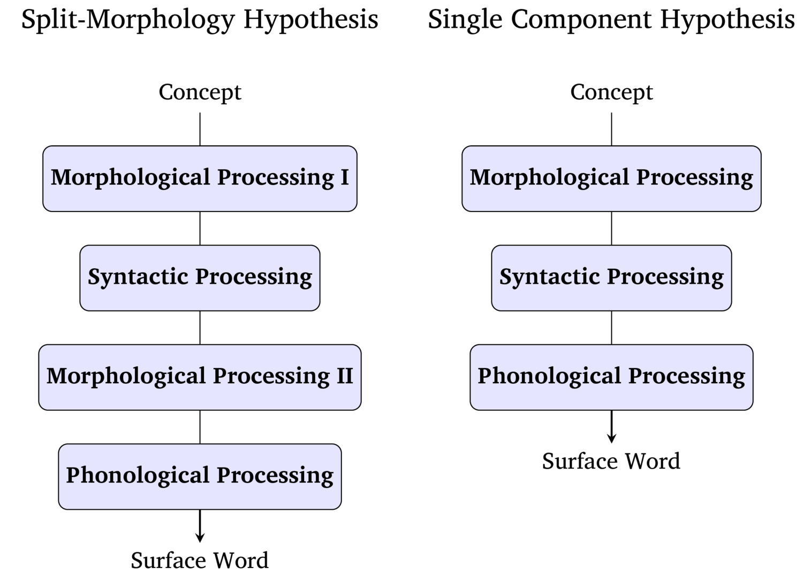
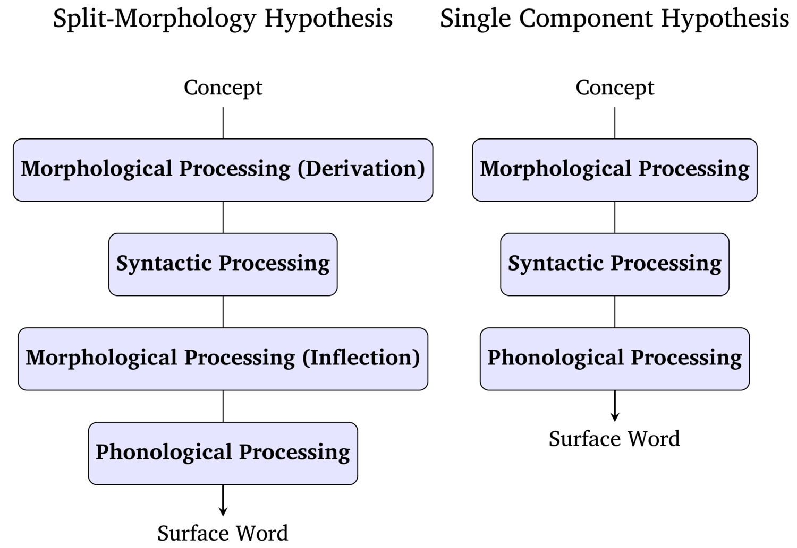
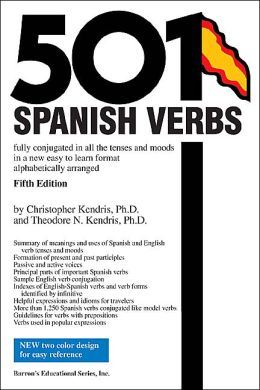

Inflection, Derivation, and Split Morphology
Lexical Families
Inflectional Paradigms
“What’s present at the end of the process”
… but there’s a process involved!
What is the nature of word formation in actual linguistic practice?

Deriving or creating ‘new words’
By Derivation (e.g. read -> readable, reader, unread)
Or by Compounding (e.g. readthrough, sight read, proofread)
These form lexical families of derivationally-related lexemes
Inflecting words to make the gramatically necessary forms during language use
Read -> reads, read, is read, has read
These form paradigms of inflectionally-related word forms
What ‘belongs in the dictionary’?
Reader? Reading? Reads? Proofread?
Nerd? Nerdy? Nerds? Nerding? Nerd out?
What forms are missing?
Can you think of a noun which can’t take a plural?
Can you think of an adjective which can’t take un-?
What affixes change the lexical category of the base?
What affixes leave the word ‘meaning the same thing’?


Not just for morphology!
We’re not going to take a strong stand on which one is correct
We’ll focus on the consequences of either of these perspectives for Language
But we will treat the inflection vs. derivation distinction as useful and meaningful
The addition of morphemes which change the meaning of a lexeme in a given linguistic or grammatical context
*“I see three cat yesterday”
*“John walk to work and see Jane dog”
*“Walk in nature make me feel more alive”
A given grammatical (e.g. 3sg) or situational (e.g. plural, past) context requires certain morphemes
We do not need to memorize (most of) them
These new word forms are generated ‘on the fly’
A set of word-forms which belong to a single lexeme
Noun paradigms are often called declension classes
Verb paradigms are often called verb conjugations
|
ana |
‘Anna’ (Nominative) |
|---|---|
| anu | ‘Anna’ (Accusative) |
|
anʲe |
‘to Anna’ (Dative) |
| ani | ‘Anna’s’ (Genitive) |
| anoj | ‘with Anna’ (Instrumental) |
| anʲe | ‘about Anna’ (Prepositional) |




A single unit of form and meaning, which may have many word-forms
‘yeet’
‘google’
‘uber’*
‘xerox’
These words are roots, and are not analyzable
These words were not created from an existing word!
burn -> ‘burner’
left -> ‘lefty’
boy, soy -> ‘soyboy’
pad, phone, OS -> iPad, iPhone, iOS
beauty -> ‘beautiful’
tender -> ‘tenderness’
These words are analyzable, and multi-morphemic!
Adding affixes or other morphological units to a lexeme to create a new word forms
A list of word-forms which are all derivationally related to a single lexeme
Pretty, Prettily, Prettyish, Non-Pretty, Anti-Pretty, Prettify?
Tight, tighten, overtighten, tightener, tight-ish, anti-tighten?
Rock, rocklike, Rocky, De-rock, derocker, non-rock, Rockify/Rocken?
Hook, Unhook, Rehook, Hooky, Hookup, Right Hook, Fish-hook
Rock, rocker, rock out, anti-rock, rock-esque
These are not considered word families
1) They introduce new concepts
2) The lexical category of the bases are different
3) The meanings are unpredictable (e.g. rocker, hooker)
… but this is still derivational morphology!
| calm | happy |
sweet |
quiet | evil |
linguistic |
|
|---|---|---|---|---|---|---|
|
_ly |
calmly | happily | sweetly | quietly | evilly | linguistically |
|
un_ |
uncalm | unhappy | unsweet | unquiet | unevil | unlinguistic |
|
_ish |
calmish | happyish | sweetish | quietish |
evilish |
linguisticish |
|
to _ |
to calm | to happy | to sweet | to quiet | to evil | to linguistic |
| _ify | calmify | happify | sweetify |
quietify |
evilify | linguisticify |
Not all derivational affixes can apply to all lexemes
There’s less contrast in ‘sweeten’ vs ‘sweetify’, ‘unhappy’ vs. ‘non-happy’
The process is less predictable
You don’t know whether an affix ‘works’ without language knowledge
The meanings aren’t clear, necessarily
One builds paradigms, and changes words ‘online’ according to situational or grammatical context
One builds lexical families, and seems to produce new words which belong in the dictionary
What’s the problem?
“Am I looking at two members of a lexical family, or two forms in the same paradigm?”
“Where, in a split-morphology point of view, was this word formed?”
The ‘-ful’ in ‘bountiful’ is an example of…
Inflectional Morphology
Derivational Morphology
The ‘-en’ in ‘darken’ is an example of…
Inflectional Morphology
Derivational Morphology
The ‘-er’ in ‘computer’ is an example of…
Inflectional Morphology
Derivational Morphology
The ‘-less’ in ‘tactless’ is an example of…
Inflectional Morphology
Derivational Morphology
The ‘un’ in ‘unimpressed’ is an example of…
Inflectional Morphology
Derivational Morphology
The ‘re’ in ‘re-adjust’ is an example of…
Inflectional Morphology
Derivational Morphology
In Spanish, the diminutive is ‘-it@’
… but both ‘gatos’ and ‘gatitos’ can be pluralized
Is the Spanish diminutive inflection or derivation?


| ### What does this mean for split morphology? |
Luckily, we don’t need to make hard-and-fast decisions
We can think about the theoretical issues
… and talk about the things that are classically considered inflectional or derivational
There’s theoretical debate about the nature of morphology in the mind
Some morphology feels inflectional, some feels derivational
Inflectional seems like it builds new word forms on-line in paradigms
Derivational morphology seems to create new word form families in the lexicon
The line is blurry, but that’s OK!